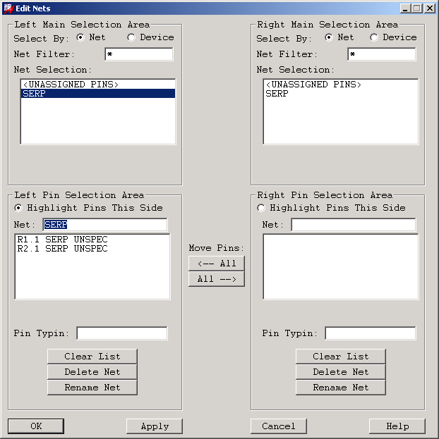
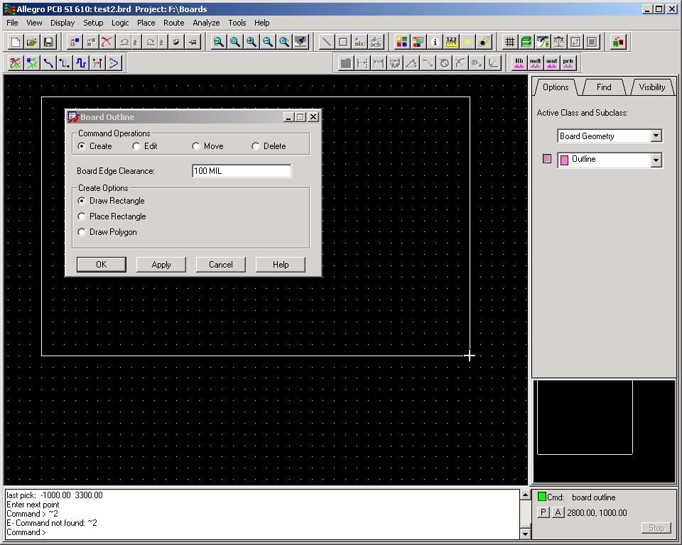
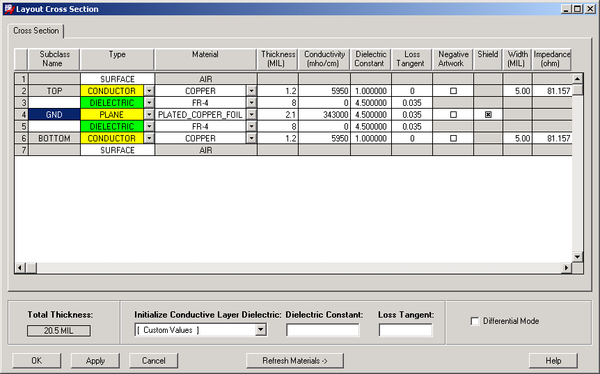

5
Floorplanning
Introduction
Floorplanning in PCB SI allows you to bring layout decisions to the forefront of the design cycle. SI provides a physical view of your design and allows you to do
system-level topology and floorplanning exploration. It functions as both a pre-route editor and post-route analysis tool that enables you to quickly develop and verify net topologies and constraints for the high-speed circuits in your design.
- perform database setup requirements for high-speed circuit simulation. See Setting up the Design
- identify rooms for critical component placement. For example, you may want to separate analog components from digital components by confining the analog components to a specific room area on the board. See Room Outlines.
- evaluate the effects of different placement strategies on design behavior.
- mock-up, simulate, and analyze logic at the board-level. See the example Drawing Logic Scenarios at the Board Level.
- develop logic and constraints for high-speed circuits from scratch without a netlist.
- ensure quality by implementing re-use of design elements and critical components. You can do this easily by importing technology files, board geometry, and setup data from other designs. For further details, see Importing Setup Data.
- perform test routing using proposed electrical constraints to ensure high-speed design rules are achievable before passing them on to the Layout Designer.
- ensure design compliance by performing quick post-route verification checks using an extensive set of post-route analysis capabilities. Checks are performed directly from the board database. Results are available with comprehensive waveform viewing and reports. See Chapter 8, “Post-Route Verification,”
PCB SI Floorplanning focuses on two main design tasks.
Board Setup
Board setup involves defining or editing one or more of the following.
Cross-Section Stackup and Materials
The Cross-Section Stackup Editor presents the ordered layers of your board in a worksheet-like format. Each layer is identified in the worksheet within the Etch Subclass column.
The attributes of each etch subclass are presented in the cells of the worksheet. Information regarding layer type, thickness, spacing, electrical characteristics, and same layer or layer-to-layer differential impedance are listed. You can define this information initially using the SI Design Setup command. However, as the Design Engineer, you should check and (if necessary) edit the stackup before commencing with signal integrity simulation on your design.
When you simulate, the etch in the design is processed through a field solver to generate models. Therefore, a proper cross-section is necessary for accurate post-route analysis and for providing information for interconnect in topologies extracted into SigXplorer. The cross-section also determines the propagation velocity of a signal as well. This propagation velocity determines the value of delay when it is expressed as a constraint value in terms of time rather than length. The use of percentage in propagation delay rules is also based on the propagation velocity of the signal.
Figure 5-1 Conceptual View of a Layout Cross-Section
To access the Stackup Editor
-
In SI, choose Setup – Cross-section.
The Cross section editor appears as shown in Figure 5-2.
Figure 5-2 Cross section editor
You can modify most attributes by entering a new value in the appropriate cell. Exceptions to this include the extreme outer layers, which have a fixed name called SURFACE and no definable attributes, and the extreme outer CONDUCTOR layers, which have a fixed name of TOP and BOTTOM. You cannot change the name TOP and BOTTOM but you can change the attribute values on those layers.
When you change the value of an attribute, other attributes may be re-calculated. For example, if you change the value of the Line Width, the Impedance changes as well.
The Materials Editor
The Materials Editor presents materials that are currently defined in your Materials file.
Each row represents a single material with columns representing the various attributes of the material. You can resize the dialog box to fully display an extended range of materials available in the Materials file (the default size displays twenty materials). It is also possible to reduce the size of the dialog box. However, the scale worksheet itself remains fixed.
To access the Materials Editor
-
In SI, choose Setup – Materials.
The Materials Editor appears as shown in Figure 5-3
Figure 5-3 The Materials Editor
The Materials Editor automatically displays default values that are in either the materials.dat file (PCB SI) or the mmcmmat.dat file (IC Packaging Design).
These are read-only files provided by Allegro that contain the most common industry fabrication materials. By default, they are located in the following directory within your installation hierarchy.
$ALLEGRO_INSTALL_DIRECTORY/share/pcb/text
You can modify material names and most other attribute values by entering a new value in the appropriate cell. Two exceptions are In Use and Type which cannot be changed.
To add or modify materials in your design, refer to the procedures for the define materials command in the Allegro PCB and Package Physical Layout Command Reference.
Board Outline
Use the Board Outline dialog box to create a new board outline or modify, move, or delete an existing one. Creating a board outline automatically generates package and route keepins. Modifying or moving a board outline automatically regenerates those keepins.
Figure 5-4 The Board Outline Dialog Box
To initiate a board outline task
-
In SI, choose Setup – Outlines – Board Outline.
The Board Outline dialog box appears as shown in Figure 5-4 -
Choose the task you want to perform from the Command Operations area.
For further steps, refer to the procedures for the board outline command in the Allegro PCB and Package Physical Layout Command Reference.
Room Outlines
Use the Room Outline dialog box to create rooms, specify room names, specify the board layer on which a room is situated, and control DRC errors. Assignment of a physical area to a grouping provides instant feedback during critical placement to assure compliance with grouping constraints.
Figure 5-5 Room Outline Dialog Box
To initiate a room outline task
-
In SI, choose Setup – Outlines – Room Outline.
The Room Outline dialog box appears. -
Choose the task you want to perform from the Command Operations area.
For further steps, refer to the procedures for the room outline command in the Allegro PCB and Package Physical Layout Command Reference.
Plane Outlines
Use the Plane Outline dialog box for creating new plane outlines or modifying, moving, or deleting an existing outline.
Figure 5-6 Plane Outline Dialog Box
To initiate a plane outline task
-
In SI, choose Setup – Outlines – Plane Outline.
The Plane Outline dialog box appears. -
Choose the task you want to perform from the Command Operations area.
For further steps, refer to the procedures for the board plane command in the Allegro PCB and Package Physical Layout Command Reference.
Keepouts
Use the Keepout dialog box, for defining keepout areas to isolate sections within the board outline where component placement is not allowed. You can create, modify, or delete keepout areas. This allows you to define areas of the board without having to use one of the add shape commands.
To initiate a keepout task
-
In SI, choose Setup – Outlines – Keepout.
The Keepout dialog box appears. -
Choose the task you want to perform from the Command Operations area.
For further steps, refer to the procedures for the board keepout command in the Allegro PCB and Package Physical Layout Command Reference.
Importing Setup Data
Rather than setting up your board from scratch, you can also import setup data from external sources such as board files as well as technology files that have been exported from other designs. Importing setup data into your design is one way to implement re-use of board geometry, parameters, constraints, and critical components that have been quality proven in other designs.
The following table lists the setup data that can be imported into your design along with its corresponding source.
| Source | Data |
|---|---|
Importing a Technology File
Use the Tech file In dialog box, for importing a technology file into your design. A tech file is in ASCII format. Results of the import appear in the tf_read.log file within the current directory. Any errors, warnings, and conflicts are categorized according to their severity.
To access the Tech File In dialog box
-
In SI, choose File – Import – Techfile.
The Tech File In dialog box appears as shown in Figure 5-8
Figure 5-8 Tech file In Dialog Box
To import a technology file into your design, refer to the procedures for the techfile in command in the Allegro PCB and Package Physical Layout Command Reference.
For further details, see Chapter 6, Creating and Using Technology Files in Allegro PCB and Package User Guide: Defining and Developing Libraries.
Importing a Board File
Use the Import Board dialog box, for selectively importing board design data from another board into your current design. The directory path and file name of the source board appear at the top of the dialog box.
To access the Import Board dialog box
-
In SI, choose File – Import – Board.
The Boardoutline Import dialog box appears as shown in Figure 5-9 -
Navigate and select the board file that you want to import into your design, then click Open.
The Import Board dialog box appears as shown in Figure 5-10
Figure 5-9 Boardoutline Import Dialog BoxFigure 5-10 Import Board Dialog Box
To import a board file into your design, refer to the procedures for the boardoutline import command in the Allegro PCB and Package Physical Layout Command Reference.
Defining Logic
Defining logic involves one or more of the following tasks.
Drawing Logic Scenarios at the Board Level
You may want to simulate certain layout configurations that are best mocked-up directly at the board level. This often comes up when you want to test a layout geometry that is not part of the standard SigXplorer Interconnect library. SIoffers layout features that provide an easy way to draw and test most any configuration imaginable. For further details and to review an example, see Logic Scenario Mock-up Example - A Look at Self-Coupling.
Component Creation and Placement
Use the Parts List dialog box to view and edit the parts list of your design or to create temporary component parts from scratch.
To access the Parts List dialog box
-
In SI, choose Logic - Parts List.
The Parts List dialog box appears as shown in Figure 5-11
Figure 5-11 Parts List Dialog Box
To edit the parts list in your design or create / modify temporary components, refer to the procedures for the edit parts command in the Allegro PCB and Package Physical Layout Command Reference.
After creating components, use the Placement dialog box to interactively place the components into your design. In addition to components, the tabbed interface allows you to choose placement symbol types and modules.
To access the Placement dialog box
-
In SI, choose Place - Manually.
The Parts List dialog box appears as shown in Figure 5-12
Figure 5-12 Placement Dialog Box
To place components in your design, refer to the procedures for the place manual command in the Allegro PCB and Package Physical Layout Command Reference.
Device Model Creation and Assignment
Once components are placed, use the Signal Model Assignment dialog box to either create new or select existing device models and assign them to the components in your design.
When you simulate a net, TLsim develops circuit models using the device models and interconnect in your design. This means that you must assign a device model to each component in the design and point TLsim to the device model libraries (where device model files are stored). Model assignments are made to individual components or to all components having the same device file.
During device model assignment, you can select models from the default model library, the standard digital device model library, or from other device model libraries that you have developed and made available through the Library Browser. You can also create Espice and IBIS device models from scratch directly from the Signal Model Assignment dialog box.
IBIS device models are created from IO Buffer Information Sheet (IBIS) standard data, or by editing existing models to accurately characterize devices.
To access the Signal Model Assignment dialog box
To create and assign device models, refer to the procedures for the signal model command in the Allegro PCB and Package Physical Layout Command Reference.
Netlist Creation
SI lets you create a netlist without having to draw a schematic. This unique feature enables you to explore various layout geometries at the board level. Once components are placed and device models are assigned, you can use the Edit Nets dialog box to create a netlist that defines the interconnect between the components.
Using the ratsnest of the net, you can perform certain signal integrity simulations on the layout. However, If your simulations require etch (for example, self-coupling analysis), you can use the add connect command to route the connections interactively before you simulate.
To access the Edit Nets dialog box
-
In SI, choose Logic – Edit Nets.
The Edit Nets dialog box appears as shown in Figure 5-13.
Figure 5-13 Edit Nets Dialog Box
To create a netlist from scratch or to modify an existing netlist in your design, refer to the procedures for the edit nets command in the Allegro PCB and Package Physical Layout Command Reference.
Logic Scenario Mock-up Example - A Look at Self-Coupling
The following example illustrates how you can use the logic features in SI to quickly mock-up, simulate, and analyze a circuit for self-coupling. A net routed in a serpentine pattern is the basis for the analysis as shown in Figure 5-14
Figure 5-14 Self-coupling Test Scenario
Step 1 - Board Setup
In order to perform self-coupling simulations at the board level, you need to perform the following setup tasks.
-
Create a simple rectangular board outline on an empty canvas as shown in Figure 5-15. See Board Outline for details.
Figure 5-15 Drawing the PCB Mock-up Outline -
Edit the default stackup and add a ground layer to provide an impedance for the trace as shown in Figure 5-16. Refer to the procedure The Materials Editor for complete details.
Figure 5-16 Adding a Ground Layer
Step 2 - Component Creation
-
Create some temporary components to support the self-coupling scenario as shown in Figure 5-17. Refer to the procedures in the edit parts command in the Allegro PCB and Package Physical Layout Command Reference for complete details.
Figure 5-17 Creating Temporary Components
Step 3 - Component Placement
-
Place the temporary components on the board as shown in Figure 5-19. Refer to the procedures for the
place manualcommand in the Allegro PCB and Package Physical Layout Command Reference for complete details.Due to the fact that the component package (FAKE) specified in the Parts List dialog box does not exist yet, you are prompted to first create a temporary package for the components. Proceed with temporary package creation by clicking OK in the Create Temporary Package dialog box that appears as shown in Figure 5-18.Figure 5-18 Creating a Temporary PackageFigure 5-19 Placing the Temporary Components
Step 4 - Device Model Creation and Assignment
-
Create an IBIS device model and assign it to the temporary components as shown in Figure 5-21, Figure 5-22, Figure 5-23, and Figure 5-24.
Note:
Refer to the procedures for the signal model command in the Allegro PCB and Package Physical Layout Command Reference for complete details.
Figure 5-20 Launching the Create Device Model Dialog Box for the DUD Components
Figure 5-21 Specifying the Device Model Type
Figure 5-22 Creating the IBIS Device Model
Figure 5-23 Power and Ground Pins Prompts
Figure 5-24 Device Model Assignment
Figure 5-25 Device Model Report
Step 5 - Netlist Creation
-
Create a netlist comprised of two nets (SERPENTINE and NEIGHBOR) that connect the pins of the temporary components as shown in Figure 5-26.
Note:
- Click Yes when presented with the following prompts.
-
The net name <netname> doesn’t currently exist. Do you want to create a new net? - Once the netlist is created, you are able to perform certain simulations on the layout using the ratsnest. However, in order to perform a self-coupling simulation, you must first route the SERPENTINE net back onto itself. This is addressed in Step 6 - Routing.
Refer to the procedures for the edit nets command in the Allegro PCB and Package Physical Layout Command Reference for complete details.
Figure 5-26 Creating a Netlist from Scratch
Step 6 - Routing
- Route the net named SERPENTINE back onto itself for a 3 inch run as shown in Figure 5-27. This step is required for the self-coupling simulation.
Refer to the procedures for the add connect command in the Allegro PCB and Package Physical Layout Command Reference for complete details.
Figure 5-27 Routing a Net to Simulate
Step 7- Simulation and Analysis
-
Simulate the SERPENTINE net to analyze for self-coupling.
-
Zoom in on an area where the trace runs parallel and measure the air gap as shown in Figure 5-28. This value is used later to set the size of the geometry window around the net where the coupling is checked.
Refer to the procedures for theshow measurecommand in the Allegro PCB and Package Physical Layout Command Reference for complete details.
Figure 5-28 Measuring the Air Gap -
Choose Analyze – SI/EMI Sim – Probe.
The Signal Analysis dialog box appears. -
Click Waveforms.
The Waveform Analysis Generator dialog box appears. -
Set up a Reflection simulation (no coupling) as shown in Figure 5-29.
Figure 5-29 Setting Up a Reflection Simulation (no coupling) -
Generate and view the resulting waveforms in SigWave as shown in Figure 5-30.
Figure 5-30 Viewing Reflection Simulation Waveforms in SigWave -
Repeat the simulation using the Comprehensive tab of the Analysis Waveform Generator (to specify coupling) setting the Aggressor Switch Mode to
Evenas shown in Figure 5-31.
Figure 5-31 Setting up for Coupling Simulation -
Click Preferences.
The Analysis Preferences dialog box appears. -
Display the InterconnectModels tab and set the geometry window to 30 mils (10 mils larger than the air gap) as shown in Figure 5-32.
Figure 5-32 Setting the Geometry Window Size - Generate and view the waveforms in Sigwave.
-
Turn on (superimpose) the original waveforms (no coupling) still resident in Sigwave and compare them against the new waveforms (coupling simulated) to analyze the effect of self-coupling on the signal as shown in Figure 5-33.
Figure 5-33 Analyzing Self-Coupling in Sigwave (Zoomed InAs you can see (zoomed in on the top-left corner of the waveforms) in Figure 5-33, the impedance is skewed a little higher and the edge is moving slightly faster on the coupled waveform.
-
Zoom in on an area where the trace runs parallel and measure the air gap as shown in Figure 5-28. This value is used later to set the size of the geometry window around the net where the coupling is checked.
-
Check the
interconn.spcfile generated by SigNoise.
In addition to viewing waveforms, you can extend your self-coupling analysis by checking the Spice fileinterconn.spcin your.../signoise.run>case<#>directory. Refer to Figure 5-34.
Figure 5-34 Coupled Trace SegmentThe coupled, lossy and frequency-dependent line of code highlighted in this figure represents the three inch long section of parallel trace that was routed on the mock-up PCB. See Figure 5-27.
Return to top